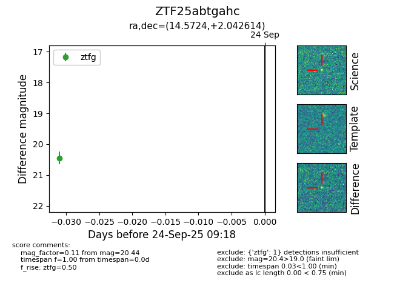

FINK: ZTF25abtgahc
Lasair: ZTF25abtgahc
ALeRCE: ZTF25abtgahc
ZTF25abtgahc (ztf,fink)
equatorial (ra, dec) = (14.5724,+2.04261)
galactic (l, b) = (126.4406,-60.78245)

last ztfg=20.44
1 ztfg detections